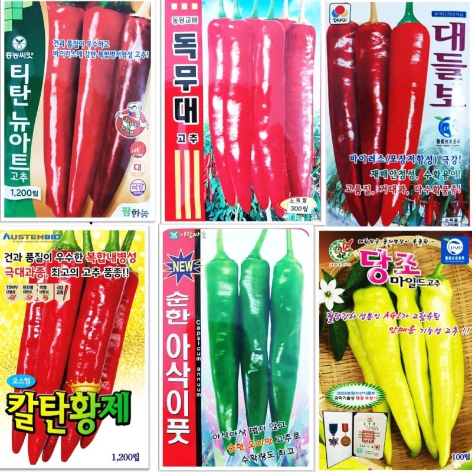
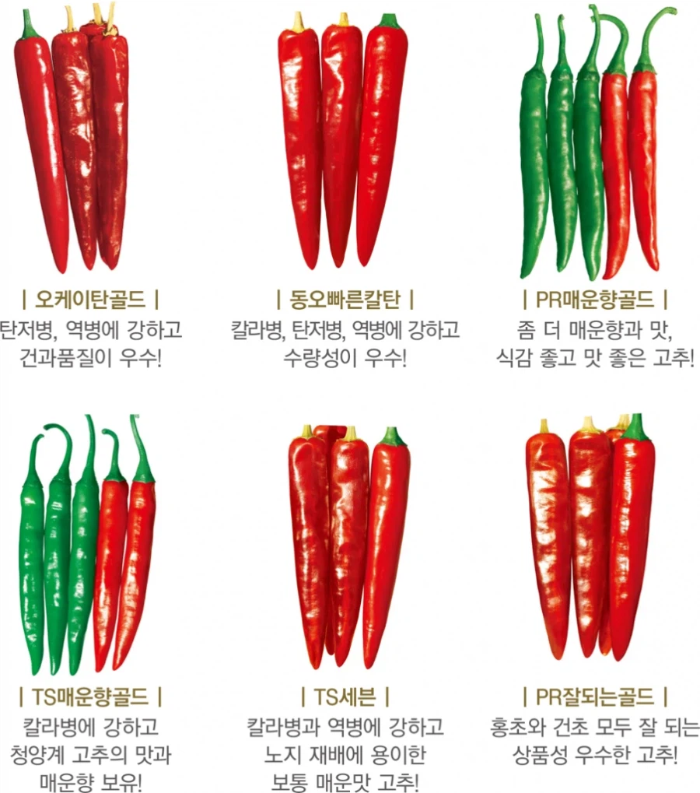

종류별로 있음
풋고추용, 고춧가루용, 아삭이용 등등
그리고 노지용, 온실용도 따로 있어서 온실용을 노지에 심으면 헤으응해서 이세계 가버림
내 고추짱이찌
짱~

기합찬이름
제기랄 고추마저 TS야
그것이 고추니까...
고추도 ts 시켰누 ㅋㅋㅋㅋ
조대강 ㅅㅂㅋㅋㅋㅋ
조 대 강
조대강은 김성모 유니버스식 이름같네
AR돌격탄은 총알이름 같잖아요
TS병에 강한 고추라 TS고추네 ㅋㅋㅋㅋㅋㅋ
TS가 왜 저렇게 커?
어우 기합차라 이게 이름이지ㅋㅋㅋ
고추는 병 안걸리는게 최고임 병만 안걸리면 고생좀 하고 쥰내많이 수확함 대신 병걸리면 그냥 ㅈㅈ임
보추는 없네
그럼 우리가 먹는 고추도 다 품종이 다른거야?
고추 새끼 이름은 테토인데 씹에겐
재배난아도 참 지랄맞음
온갖 질병과 병충해로 기르기 어려운 고추
고춧가루 많이 나오는 고추 종류가 따로 있나